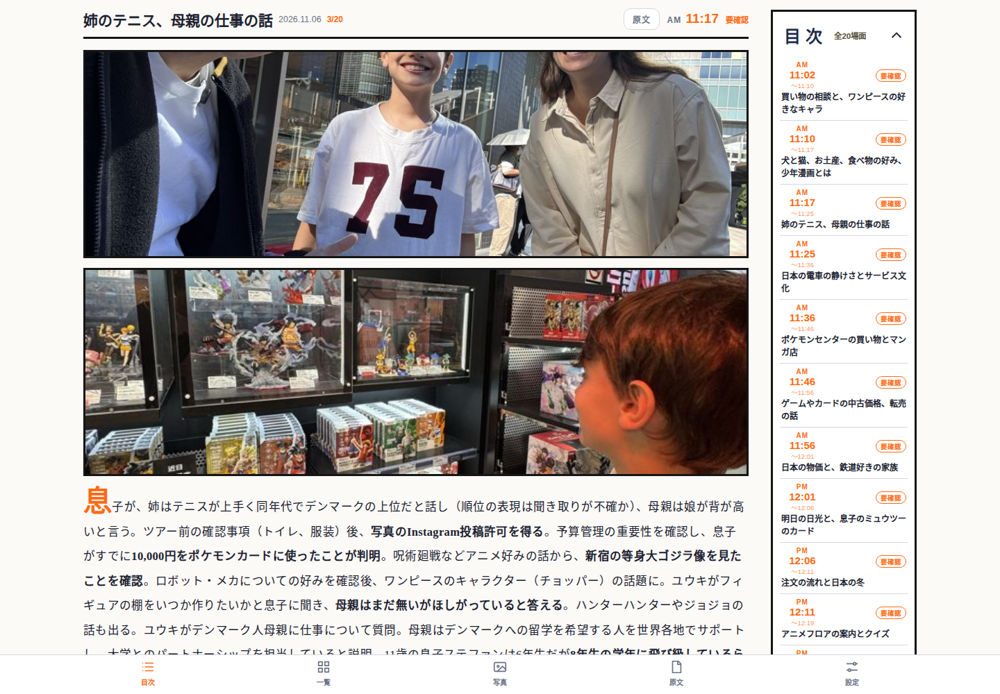
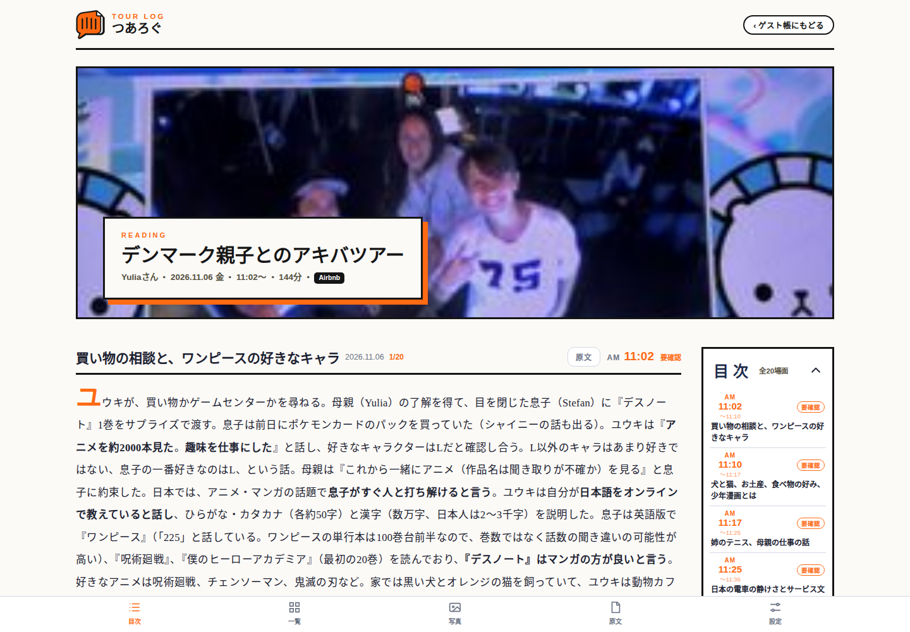
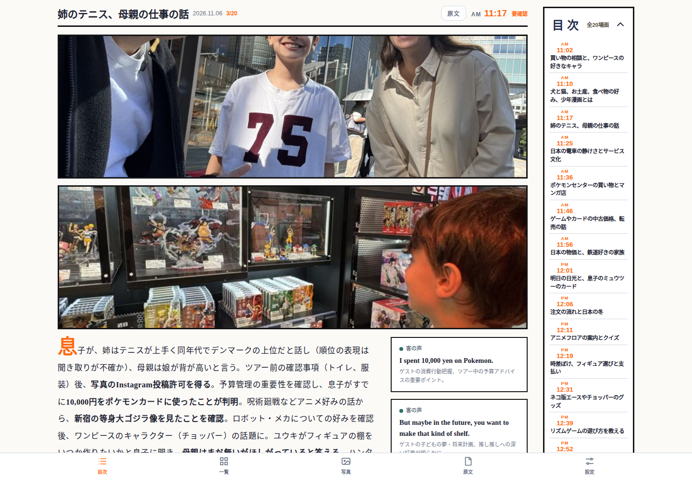
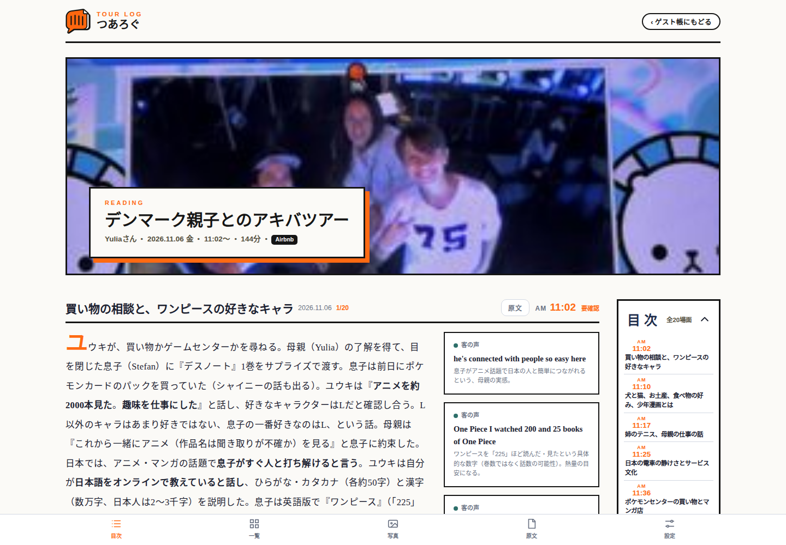
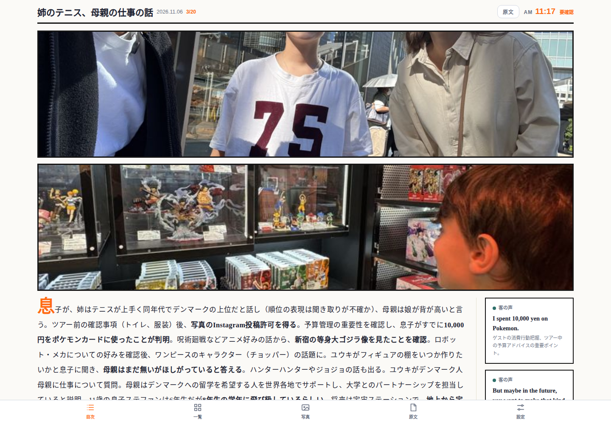
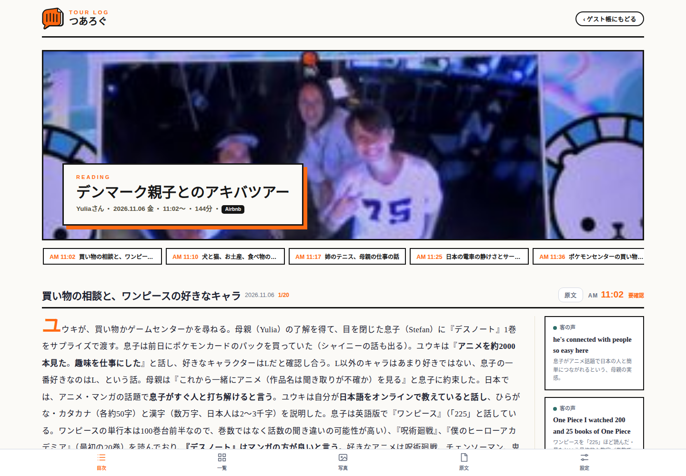
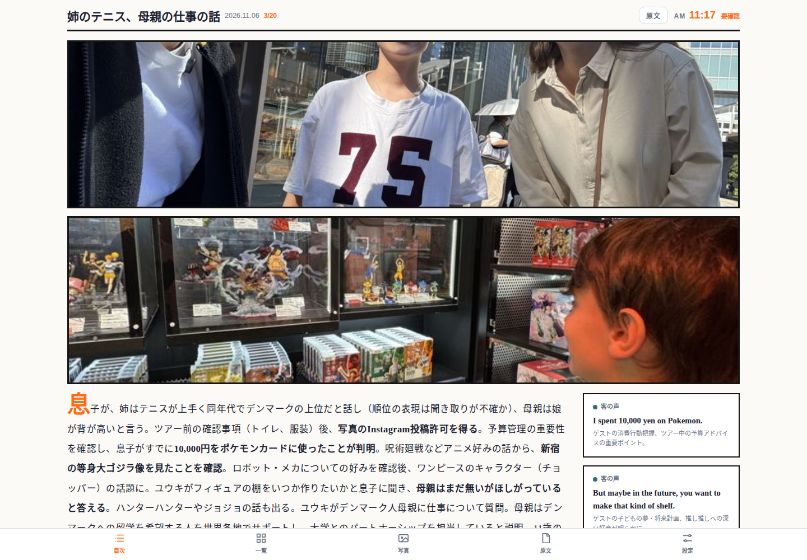
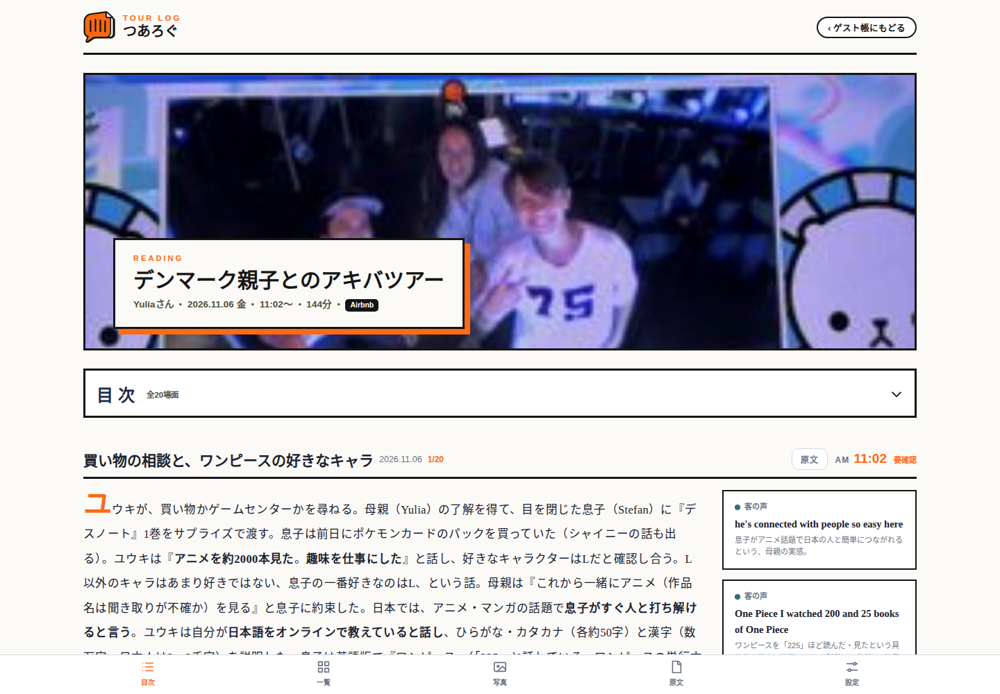

目次＝折りたたみ（ヒーロー下のバー、既定は閉）。固定レールをなくし、注記カードは右の細カラム230pxへ寄せた、ユウキの見立てどおりの案。本文がほぼ2倍に広がる。
場面まわり（本文＋右に細い注記カラム）
ページ上部（ヒーロー下に折りたたみ目次バー）
現行マガジン型の課題は「本文が狭い」こと。現行の本文幅は498px（注記カード300px＋目次レール330pxに幅を取られている）。 5案ともカラム幅の配分だけを変えた1440px実寸モックで、本文幅は実測値です。サンプルはYulia回（デンマーク親子とのアキバツアー／2026年11月6日）の実コンテンツ。本番ページは変更していません。
目次＝折りたたみ（ヒーロー下のバー、既定は閉）。固定レールをなくし、注記カードは右の細カラム230pxへ寄せた、ユウキの見立てどおりの案。本文がほぼ2倍に広がる。
場面まわり（本文＋右に細い注記カラム）
ページ上部（ヒーロー下に折りたたみ目次バー）
目次＝固定（細レール210px）。注記カードを横並びカラムから外し、各場面の末尾に本文幅で並べる。本文は目次分を除いた全幅を使い、読みの流れが切れない。

場面まわり（本文の下に注記カードが本文幅で並ぶ）

ページ上部（右に細い目次レール）
目次＝固定（190px、時刻＋見出しだけの最小表示。要確認バッジと終了時刻は省略）。本文：注記＝7:3で、注記の読みやすさも残す、現行からの変化が一番小さい無難なバランス。

場面まわり（本文：注記＝7:3）

ページ上部（右に最小幅の目次レール）
目次＝上部チップ（ヒーロー下に場面チップを横並び、常時表示）。注記は画面右端の230pxカラムに罫で分離し、画面幅も少し広げた。本文幅は5案で最大。

場面まわり（本文＋右端に分離した注記）

ページ上部（ヒーロー下に目次チップの横並び）
目次＝折りたたみ（上部バー、既定は閉。開くと2カラムで全20場面を一覧できる）。注記は280pxで現行に近い幅を保ち、本文との両立を取る。

場面まわり（本文＋注記280px）

ページ上部（ヒーロー下に折りたたみ目次バー）
つあろぐ（TOUR LOG）読み物ページ PCカラム幅バランス検討用ボード。選ばれた案だけを後で本番へ実装します。